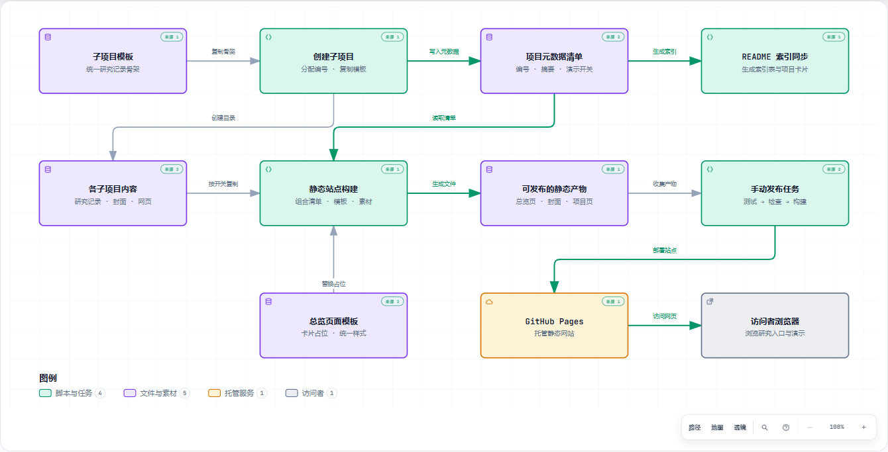

REAL CODE → AUTHORED MODEL → ARCHIFY
拿我们自己的仓库，
做一次真实的代码到图。
分析对象：0909_codex_project。它是一套研究项目收录与静态展示工具；这次依据真实源码整理其工作机制，再把理解写成 Archify 的图规格。图中的节点、关系和解释均为中文，关键模块可以跳转到固定版本源码。

这张图怎样读？
- 顶部：收录与索引。创建命令复制项目模板、分配编号，将摘要和状态写入清单，然后同步 README 的索引表和项目卡片。
- 中部：静态网站。构建函数读取清单、总览模板、封面和各项目 web/，在 _site/ 生成总览与项目网页。
- 右下：发布与访问。手动 GitHub Actions 工作流运行检查和构建，上传站点产物，交给 GitHub Pages 托管。
图中的箭头表示输入、输出与数据流；它不是完整函数调用图，也不表示每个命令都会自动接着执行下一个命令。发布工作流会在 CI 中重新构建站点。
信息到底是谁提供的？
① 本次 Agent 阅读仓库代码，提炼职责与关系
② 本次 Agent 编写带中文说明和源码引用的 JSON
③ Archify 校验输入、检查源码定位、计算布局并渲染
④ 浏览器打开真实 HTML，检查显示与交互
代码理解由本次分析完成，Archify 没有自行扫描并理解这个仓库。它接收的是整理后的 JSON 和用于核验引用的 Git 仓库。你也可以直接修改 JSON，让它重新画图。
图里的结论，能在哪里找到？
| 图中模块 | 代码支持的行为 | 固定版本源码 |
|---|---|---|
| 创建子项目 | 检查参数与 slug，分配编号，复制模板，写入元数据并同步索引。 | create_project · 171–200 行 ↗ |
| 项目清单 | 读取 registry/projects.json；检查编号、顺序、目录、封面和演示入口是否有效。 | load_catalog · 49–93 行 ↗ |
| README 索引同步 | 按 order 生成表格与卡片，只替换指定标记之间的内容。 | readme_content / sync ↗ |
| 静态站点构建 | 重建 _site/，复制封面和启用的项目 web/，将项目卡片插入总览模板。 | build · 133–168 行 ↗ |
| 手动发布任务 | workflow_dispatch 手动触发；仅 main 分支发布。执行测试、清单检查、构建、上传和部署。 | pages.yml ↗ |
| 普通推送检查 | push / PR 运行检查和构建，没有部署步骤。 | check.yml ↗ |
这次跑出来的结果
- 11 个节点、11 条关系。10 个节点带源码引用，总计 14 处；访问者浏览器是外部参与者，没有伪造源码引用。
- 9/9 构图检查通过。最终交付记录为 0 错误、0 警告，并保留图规格和 HTML 的 SHA-256。
- 4 个桌面视口检查通过。1440×900、1600×1000、1920×1080、2048×1320；另保留两端视口的深浅主题截图。
- 图中解释为中文。三个章节分别说明收录、构建和发布；点选“静态站点构建”的来源可定位真实函数。
版本与边界
分析对象的机制代码固定在 855cde3；核对时当前工作区中的 catalog.py、项目模板与两份工作流同该提交一致。项目数量和新研究内容持续变化，因此图没有把某个临时数量写成结构事实。Archify 渲染器固定为 1072200 / 2.17.0-dev.1。
来源核验确认固定提交、文件和行号有效，不能独立证明全部架构语义。本图是按代码整理的高层说明，未覆盖所有校验分支、每个研究子项目的内部实现或 GitHub 平台内部机制。